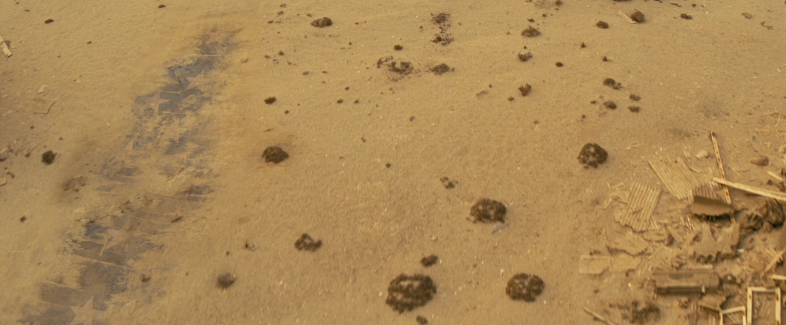

ハリウッド・ウォーク・オブ・フェーム
TVシリーズ ロケーション
LOCATION DATA

The Hollywood Walk of Fame is a location {{In|FOTV}}.
Background
A pre-War landmark erected in the namesake district of California, it served as a major tourist attraction for years. The walk passed by major film studios in Hollywood, including the site of California Crest Studios.By the late 23rd century, the desert winds and rolling sands of the wasteland have resulted in much of it being buried and illegible.
In the TV series
The Head
Super Duper Mart near Santa Monica Boulevard.Appearances
The Hollywood Walk of Fame appears only in the Fallout TV series episode "The Head."Behind the scenes
* What is shown of the landmark strongly resembles the real-world Hollywood Walk of Fame. * The Hollywood Walk of Fame was filmed using digital effects.Category:Fallout TV series locations Category:Boneyard
Impression
（準備中）
（準備中）